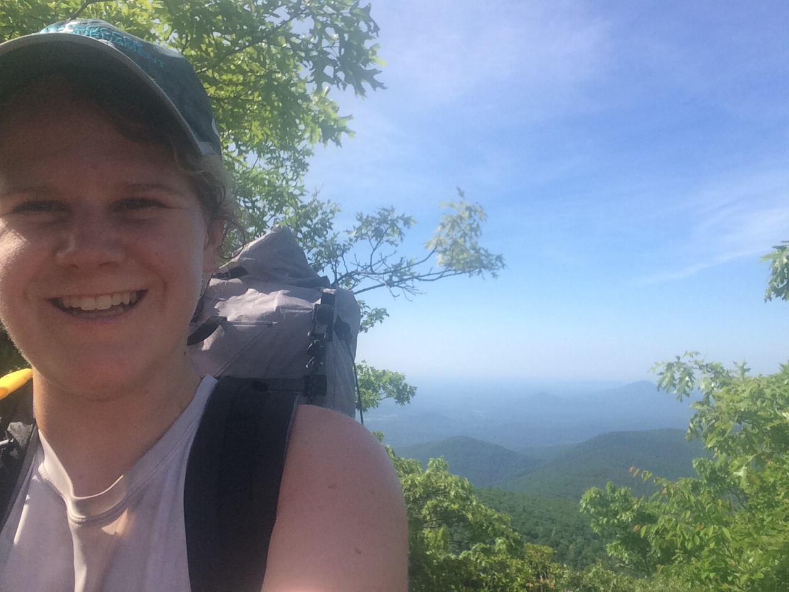
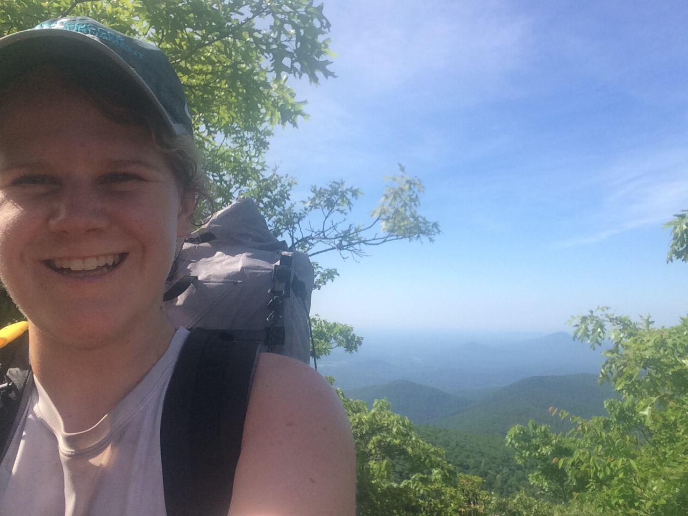
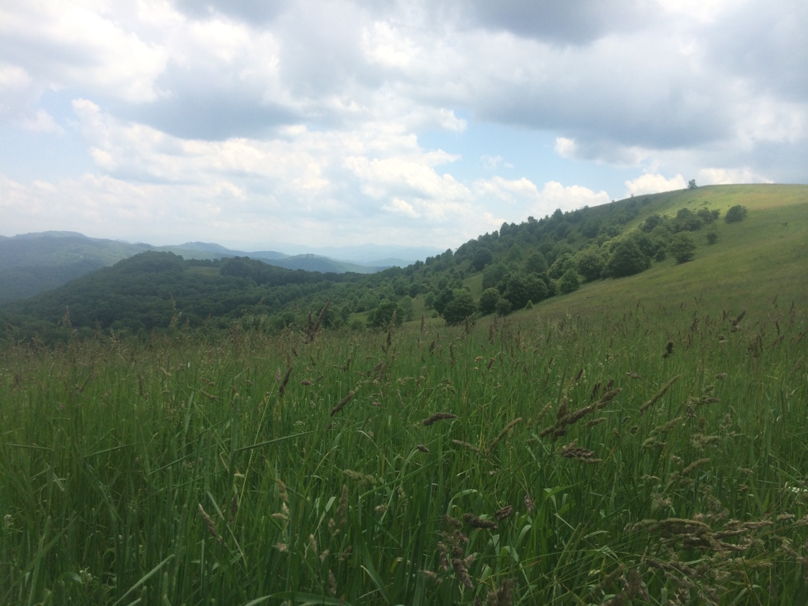
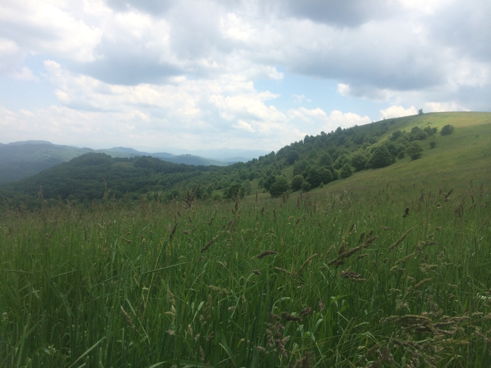

Appalachian Trail Blog - 2014
In 2014, I hiked the Appalachian trail northbound from Georgia to Maine. I wrote a blog along the way, which was originally posted on Tumblr. I’ve moved the blog to Rmarkdown so it’s easier to manage going forward. I’ve tweaked a few post titles and a bit of text formatting for consistency and clarity, but otherwise the blog’s content is unchanged from its original form.
A Beginning
Originally posted on May 29th, 2014 11:09pm
“It is good to have an end to journey toward; but it is the journey that matters, in the end.” – Ursula K. Le Guin
Tomorrow I’ll be traveling around 2,200 miles by car, boat, and train so that on Sunday, I can spend the next four to six months walking that same distance, albeit heading north instead of east.
What? Why? That seems crazy! And horribly inefficient.
Yes, yes it does. But what are you going to do when you’re a recent college graduate from the west coast with a hankering to see the east coast? What better way than on foot on the Appalachian Trail?
The Appalachian Trail (AT) is a 2,180+ mile trail that runs from Springer Mountain in Georgia to Mt. Katahdin in Maine. It is the best known national scenic trail in the United States. Sometimes referred to as the People’s Trail, around 2-3 million people visit the trail each year, according to the Appalachian Trail Conservancy. Most of them visit for an afternoon, some for a few days or a week, and a small number attempt something called a thru-hike.
A thru-hike is simple in theory: walk the entirety of the AT in one go. However, in practice, it’s a bit more of an undertaking. Only one out of every four individuals who begin hiking with this goal achieve it.
So, why do it? I get asked that question a lot. I’ve asked myself that question a lot. And even though I’ve given many answers, from the cop-out (“I like hiking”) to something that feels a little more true (“I need an adventure, something to test my mettle, to wake me up”), I honestly haven’t really figured it out. But I want to go, I’ve bought the ticket, and maybe that’s good enough for now.
And it’s not like I won’t have time to think about my reasons while I’m out there. I’ll have nothing but time.
So for now, that’s it. I’ll do my best to keep track of my journey on here, so we can take this adventure on together (and my parents have proof that I’m still kicking).
It’s hike time.
Photos: Getting ready!!
Originally posted on May 30th, 2014 5:17pm


Part 1: Georgia (days 1-4)
Originally posted on June 4th, 2014 8:11pm
Wow. It has been a crazy 4 days. Here’s an overview:
- Day 1: Amicalola Falls State Park Approach trail (8.8 miles); Springer Mtn. —> Justus Creek (14.3 miles on AT, from now on all mileage listed is on the AT)
- Day 2: Justus Creek —> Neel Gap (17.4 miles)
- Day 3: Neel Gap —> Blue Mtn. Shelter (18.8 miles)
- Day 4: Blue Mtn. Shelter —> Dicks Creek Gap (19.1 miles)
- Total Mileage: 69.6 miles from Springer Mtn. + 8.8 mile Approach Trail (78.4 miles total)
Right now I’m in a hostel down the road from Dicks Creek Gap called Top of Georgia. It’s an awesome place (brand new this year), and although I’m glad to be here, the extra half mile road walk I did to get here almost put me flat on my back. I am beat. But happy. For the most part.
As with most adventures, we don’t do them because they’re easy. We do them because they test us. And I’m still in the adjustment period where I’m figuring out my physical and mental limits. I’ve certainly pushed them so far. And there’s been a toll on my body. My knees creak and ache on every downhill. My shoulders are rubbed raw where my pack sits. Every night I go to sleep feeling like there’s no possible way I could walk even one more step.
But the human body is an amazing thing. And every morning, after a mile or two warm up, I get a spring back in my step and I attack the day.
It’s been beautiful. I know the pictures I post can’t possibly do it justice, but I hope they give you an idea of what it’s like out here.
I’m tired, so for now all I’ll post is a snippet of something I wrote my first day on the trail.
Day One
After traveling for almost 20 hours, I finally reached the Hiker Hostel in Dahlonega, GA. The host, an awesome lady who’s hiked the Pacific Crest Trail and the Colorado Trail, showed me the four bunk room I’d be staying in. I snagged a top bunk and immediately crashed.
After one of the best naps I’ve ever had, I puttered around the hostel. I met a girl named Emily, who was staying at the hostel with her parents while her dad trained for a bike race. I also met a group of five guys: Craig, Ben, Alex, Eric, and Brett. Their plan was to hike to Damascus, VA. They had actually been on the trail for two days already, but Brett had gotten sick. They had to get off at Woody Gap (~20 miles in) to take him to the hospital. They were staying at the hostel to let him recuperate. They were hoping to get back on the trail within a day or two.
After a full night’s sleep, I was finally starting to get pumped for the trail. I had been planning and prepping and daydreaming during biophysics (sorry mom and dad) for months. The moment was here. It was hike time.
The other host drove me to Amicalola Falls State Park (AFSP) so I could take the 8.8 mile approach trail to Springer Mountain and the start of the AT. We had an amazing conversation about his AT thru-hike and the life-changing experience I was about to have. How the trail is all about the journey, not the destination. How I was going to meet so many amazing people. How I should always hike my own hike.
I registered as a thru-hiker (#1357 this year!) and weighed my pack (21 lbs, which seems fitting as that’s the same as my age). The guy who drove me over took my picture under the AFSP arch, the classic pre-AT photo.
I set off with some serious spring in my step. I’m sure I looked silly walking around with a dopey grin on my face. I hiked up the approach trail, starting with a butt burning 600 stairs to reach the top of the falls that give the park its name. They are the tallest falls east of the Mississippi, so it was definitely worth the walk.
The trail flattened out some, but climbed pretty steadily until I reached Springer Mountain. I realized I had already lost my sunglasses. I took it in stride; the trail was just keeping me honest, teaching me a lesson with something I could afford to lose.
I was cruising along the trail. I felt like I was flying. I passed my first white blaze (the marker that will guide me all the way to Maine) and smiled like an idiot. I never wanted to stop. It was everything I had hoped!
They call them mountains out here, but they felt like glorified hills to me. Although the trail was rockier and studded by more tree roots than I’m accustomed to, the trail was gentle, climbing and falling without switchbacks.
I passed a shelter and decided to keep going. I reached another and was tired enough that I stopped and made dinner there. I was going to stay the night, but felt too overwhelmed by all the large group of boys and their fathers. So I pressed on.
On my way, I met an elderly man who goes by the trail name Statesman. He’s going to finish his section hike tomorrow after spending 14 years hiking one state per year. That kind of dedication is incredibly impressive.
I also met three guys named Tugboat, Spider-man and Anchor. They were carrying crazy heavy packs (70lbs!!) but were still making 8 miles per day! They were nice and seemed amazed that I was attempting a thru-hike. They were also chatting with a guy named Viceroy from Minneapolis. He’s about my age and also trying to thru-hike. We set off together to try and reach the next shelter before dark.
We made alright time, but it was clear we were both very tired. Viceroy stopped a bit before me, because I wanted to camp somewhere with a water source. I kept going until Justus Creek. There was a nice retired man camped there named John. He was hoping to make it to the North Carolina border.
I went down to the creek and soaked my feet. I was happy and pleasantly exhausted. It was a good first day.
“A journey of a thousand miles begins with a single step.” Laozi
Oh, also, from the wisdom of Hallie on Days 2-4, Georgia takes it badly when you call her mountains weak. She’s been punishing me with switchbacks, long stretches of piled rocks masquerading as a trail, rock staircases and other ankle-twisting nastiness. Fun times, especially at the end of the day! Check out the pictures to see what I mean.
Other side note, Brett of the hostel boys went home sick. Unfortunately, Ben also had to head home because of illness. But the other three are still going and are at the hostel too. Hopefully I’ll get to see them more on the trail!
Final last side note, there’s two bunk rooms in the hostel, and I swear two of the guys are having a “snore-off”.
Photos: Part 1
Originally posted on June 4th, 2014 8:23pm

 

Photos: Part 1 Flora and fauna
Originally posted on June 4th, 2014 8:27pm
If you can identify any of these, let me know! I’d love to know what exactly I’m looking at all day.


Part 2: Goodbye Georgia, Hello North Carolina! (Days 5-8)
Originally posted on June 9th, 2014 8:23am
- Day 5: Dicks Creek Gap/Top of Georgia hostel –> Muskrat Creek Shelter (11.8 miles)
- Day 6: Muskrat Creek Shelter –> Long Branch Shelter (21.1 miles)
- Day 7: Long Branch Shelter –> Winding Stair Gap/Franklin –> Wayah Shelter (18.3 miles)
- Day 8: Wayah Shelter –> Nantahala Outdoor Center (16.3 miles)
- Miles from Springer: 137.1
I’ve hit some of my first big milestones since I last posted: first state line (GA/NC), first 100 miles, first thunderstorm.
The day after I posted I headed out with the guys I met at the first hostel I stayed at (Eric, Alex, and Craig) along with a goofy guy named Chris who we met at the Top of Georgia hostel. We almost missed the unassuming state border sign, but got lucky and stopped to take pictures with it.
We had heard North Carolina was going to be a lot tougher than Georgia. For the most part, they seem to be pretty much the same, except that North Carolina likes to climb mountains really steeply and quickly, whereas Georgia does it over long drawn-out miles.
We didn’t want to push ourselves too far, so we stopped after a relatively short day. My knees were happy about that.
My tent was tested in its first rainstorm that night, and it performed great. I woke up dry and ready to hike. We split off from Chris and set off on another relatively gentle hike. The trail was pretty smooth, the sun was shining and it wasn’t too hot. A great day. Since we weren’t too tired, we decided to push on over Albert Mountain to reach the Long Branch Shelter. Despite thunder threatening, we climbed the metal observation tower and got our first 360 degree view. It was amazing to finally get above all of the trees and get a sweeping view of the rolling mountains. In the distance we could see the faint shimmer of water, Fontana Dam, the last stop before the Great Smoky Mountains. Dark clouds overhead kept us from staying longer to celebrate our first 100 miles from Springer Mountain.
We tried to sleep in the shelter, but the squeaking of mice sent me running to set my tent up outside. I wasn’t about to have little rodents sharing my sleeping bag! The boys set up their tents inside the shelter which was a funny sight.
Although I don’t have a trail name yet, I have taken to calling the boys “The Plague”, because their group seems to be dropping off the trail like flies.
Trail names are kind of a rite of passage out here. Most people’s names are given to them by other hikers. Many names are based on food, which is a big topic of conversation out here. I’ve heard of a “Ramen Shamen” and a “Maple Syrup”. But the names aren’t always what you want them to be, particularly if you do something memorable. For example, I heard that one guy who consistently passed a lot of gas at the shelters is now referred to as “Chevron”. I hope I don’t get stuck with one like that!
The next morning we pushed on 8 miles to Winding Stair gap, where we hitched a ride into Franklin to resupply. It was my first time hitchhiking, and I have to say, it was easier than I thought it would be! No more than 5 cars passed us by before Eric and I were picked up by a man with the thickest Southern accent I’ve ever heard. He told us he picked up hikers all the time and had always dreamed of hiking the AT himself. He dropped us off at WalMart, where we waited about 20 minutes for Craig and Alex. They didn’t have as good of luck getting a ride. I think it might help that I’m a girl…
After picking up about 12 candy bars each, we went across the street to an all you can eat (AYCE) Chinese buffet for lunch. We stuffed ourselves. I don’t think I’ve ever eaten so much in one sitting.
After that, the boys were too full to think about hiking. They wanted to hitch another ride to the center of town so that they could get a beer. I wanted to keep hiking with them, but I also wanted to get back on the trail. I knew I could get in at least a few more miles if I went back sooner rather than later. I didn’t want to get stuck staying the night in Franklin. And honestly, all of the cars and people in town were a little off-putting after so many days of quiet and relative solitude.
So we said our goodbyes and went our separate ways. I ended up taking a taxi back to the trail. Although it had been thrilling to hitch with the Plague, the prospect of doing it by myself was a little daunting. I hiked right up until dusk and had just finished pitching my tent and hanging my food when full dark arrived.
Around 2am, I woke up to the sound of rain. I wasn’t too worried though, because my tent had done so well earlier that week. Then it started thundering. Not gentle thunder that you can tell is far away, but bone rattling thunder that lasted for minutes on end. There was no start and stop, every time it seemed to die down, the thunder seemed to amp itself back up and crack to a new level of loud.
Then the lightning started. It was like a strobe light outside of my tent. I lay awake, glad that I wasn’t on an exposed ridge, but still worried about the potential for trees to blow down. I tried doing the trick where you count the time between the thunder and lightning to see how far away the storm is, but since they were simultaneous, I figured I was in the heart of it.
The rain started beating down on my tent so hard that a fine mist sprayed down on me after every drop. I turned on my headlamp and realized I was laying in a small puddle of water. At this point, I decided that it would be better to deal with a few mice than a completely soaked bag. Even though the storm had only died down a little bit, I bundled all of my stuff under my arms and made a mad dash to the shelter. I ran back and took down my tent also. I spread everything out to dry in the shelter and spent a long night keeping warm by walking around and watching the lightning from the shelter.
The next morning, I dried everything off as best as I could, packed up my bag and headed out. Luckily, the rain had stopped and the sun was shining through mist rolling off the mountains. The plan was to get to the Nantahala Outdoor Center (NOC), where I could sleep in a bed and take a shower. And hot damn did that sound good.
The day started out similarly to how North Carolina had been the last few days. But then she showed her true colors. The day ended with a brutal 6 mile, 2,400 ft descent that seemed to last for years. My knees hurt every step of the way. And it wasn’t always a nicely graded descent either. At points, I was scrambling down from huge rock to huge rock.
But I made it and took one of the best showers of my life. I took a nap and then walked around the NOC like a scrub in my Crocs and dirty clothes. But I didn’t care, because I got myself a pulled pork sandwich and a beer and life was just dandy.
Today, I ate breakfast at the restaurant, bought some more supplies, and watched the many tourists head out on whitewater rafting trips the NOC is known for. I’m feeling well rested and ready for the apparently equally brutal climb out of the NOC. From here, the next stop is Fontana Dam and then on to the Smokies.
Photos: Part 2
Originally posted on June 9th, 2014 6:58am


Part 3: Day 9 and 10
Originally posted on June 10th, 2014 1:49pm
- Day 9: NOC –> Brown Gap Shelter (16 miles)
- Day 10: Brown Gap Shelter –> Fontana Village Resort –> Fontana Dam Shelter (12.7 miles)
- Miles from Springer: 165.8
Just a quick post because it’s hardly been anytime since my last one!
Nothing too exciting has happened. The hike out of the NOC wasn’t nearly as hard as I’d been told, but maybe that’s just because I’d take an uphill over a downhill any day. I had planned on stopping at a shelter around 7 miles from the NOC, but I was feeling good after a great night sleep in the hostel, so I just ate lunch there instead. While there I chatted with a father and daughter pair who we’re hiking southbound from Fontana Dam to the NOC. They gave me good info about the upcoming section of trail. Just as I was eating, an older man who goes by Mr. Wonderful hiked down to the shelter.
I had originally met Mr. Wonderful, who looks like a hiking Santa Claus, while resupplying at the NOC. When I told him I didn’t have a trail name yet, he took it upon himself to come up with one. When I passed him on my way out of the NOC, he stopped me and told me my new name. He said it should be Sassafrass Tea because I have some red in my hair and I “look like a sassy girl”. I’m not sure if I’ll keep that one, but it’s funny that the day after writing about trail names I got a suggestion for one.
After lunch, I pressed on. It was only around 2pm, so I was feeling good about the 9 miles I had left before the next shelter. It’s not critical that I stay at a shelter, but after that thunderstorm a couple of days ago, I didn’t want to be caught without a place to hide. And the clouds overhead were dark and threatening and wind was whipping through the trees like it seems to do the day before a nighttime storm.
There was a great view from Cheoah Bald. I took some more vista pictures and took a moment to enjoy the fruit of my climb out of the NOC.
My knees were talking at me as I descended to Stecoah Gap, but thankfully that’s where I experienced my first bit of trail magic! Some kind person who had thru-hiked in 2013 had left a 6-pack of Yoo-hoos and two bags of salt and vinegar chips. I cracked open my first Yoo-hoo (a chocolate milk type drink) and drank it with gusto. I left the huge bags of chips for a bigger group.
It was good that I had fuel because the last 2 miles of the day climbed ridiculously steeply. I wish pictures could do it justice, but you’ll just have to take my word for it that North Carolina does not use nearly as many switchbacks as she should to get you up a mountain. Instead, she has you just climb straight up the sucker.
But I made it and was surprised when I was greeted by a group of six people at the shelter. That was the most people I’ve seen at one shelter. They were all a bit older, mostly 50+.
There was a pair of brothers there, one of which was a joker who tried to convince me that “Guano” would be a good trail name because it was “Cherokee for robin”. The group had a laugh as I tried to diplomatically side step getting saddled with birdshit as a trail name. Coyote, the joker’s trail name, told me he played that prank on an old girlfriend of his and that she didn’t know what it meant. She went 110 miles proudly telling people her new trail name. She probably would have kept it forever if it hadn’t have been for her mom breaking the bad news about its real meaning.
I also met a couple and two ex-military people who didn’t know each other before the trail but had been hiking together since Winding Stair. The ex-military hiking pair consisted of Hope and her dog Nicky (so cute) and Monk, who is trying to make it all the way to Maine. Monk is a very interesting guy. He talked to the brothers for most of the night about his work with the Navy and the state of the world today. He also told me he’s going to write a book about the AT and that I should too. He thinks it’s a wise financial choice, because the movie based on Bill Bryson’s “A Walk in the Woods” is being filmed right now, so there’s going to be a serious increase in demand for AT related materials after it comes out. I don’t know about writing a book myself, but I’m happy he’s going for it!
I set up in the shelter, but didn’t sleep too well at first. I was happy I did though, because around 3:20am, the wind and rain started pounding the shelter so hard that it sounded, as Hope put it the next morning, like someone was throwing buckets of water at us, buckets included. Then, the thunder picked up and there were some lightning flashes. It was nothing like a couple days ago, but it was very loud in the metal roofed shelter. At one point, it devolved into just a dull roar, like a jet was parked outside. But thankfully it blew itself out pretty quickly and the storm died down around 4am.
This morning I woke up early, mostly because everyone else was already up. I was out hiking by 7:30am. I planned to make it to Fontana Dam Shelter, which is known as the “Fontana Hilton” because it has hot showers. Oh boy.
I find that when I’m planning on reaching something exciting like that at the end of the day I get completely fixated on it. I can’t just relax and let the miles come to me. Instead, I’m constantly thinking about how awesome it will be when I get where I’m going. And let me tell you, that makes the day move by like molasses. Every mile took forever. It didn’t help that the last section was a long couple of miles of downhill. My knees weren’t having it. I won’t write what I was saying, but let’s just say it wasn’t pretty. A lot of cursing and tirades against the trail’s family and ancestors and children…you get the picture.
But then I came across a turtle. Well, it’s more accurate to say I almost stepped on a turtle.
I shocked him almost as much as he shocked me. He made this little whistle-whooshing noise like he couldn’t believe that his extraordinarily long life had almost been ended by this upstart whippersnapper’s foot. Such an indignity. But all joking aside, it was pretty amazing. He instantly sucked all his limbs and tail into his shell. Just the top of his nose stuck out of his shell. I took some pictures and then waited to see if he would start walking again. I learned to never enter a standoff with a turtle, because he will always win. I left him to his day and went onwards with mine, cursing all the way down to the Fontana Dam Marina.
At the Marina I washed up and got a shuttle into the Fontana Village Resort. I’d been dying to do laundry, but was unsure how to wash all of my clothes when I had nothing to change into. Luckily, the lady at the general store is amazing and thought ahead for all of us hikers. She has scrubs on hand for hikers to wear while doing laundry. I could’ve hugged her. She made my day.
And basically all I’ve been doing since I got in around 1pm is hanging out, doing laundry, and eating. A much needed relaxation half-day after putting a lot of strain on my body. Tomorrow I make the huge climb into the Smokies. I need to be well rested for that. Maybe I’ll finally see a bear on this trip. Apparently the Smokies are known for their huge black bear population. We’ll see!
Photos: Part 3 Day 9 and 10
Originally posted on June 10th, 2014 1:53pm


Part 4: The Smokies to Hot Springs (Days 11-16)
Originally posted on June 16th, 2014 2:10pm
- Day 11: Fontana Dam Shelter –> Russell Field Shelter (13.8 miles)
- Day 12: Russell Field Shelter –> Mt. Collins Shelter (22.7 miles)
- Day 13: Mt. Collins Shelter –> Tri-Corner Knob Shelter (20.1 miles)
- Day 14: Tri-Corner Knob Shelter –> Standing Bear Hostel, with side trip to Mt. Cammerer Fire Tower (18.1 miles on AT, 1.2 mile side trip)
- Day 15: Standing Bear Hostel –> Walnut Mountain Shelter (20.3 miles)
- Day 16: Walnut Mtn Shelter –> Hot Springs, NC (13.1 miles)
- Miles from Springer: 273.9
So I was going to enter the legendary Great Smoky Mountains. I had heard they were amazingly beautiful and eerie, but most of all, crowded.
According to my guide book, the Smokies are the most visited of the traditional national parks. It is also home to 400-600 black bears. The combination of heavy visitation, much of it by people who don’t follow the “leave no trace” methodology of backpacking, and a large population of bears leads to unfavorable human-bear interactions. Irresponsible people feed the bears, who then get habituated to people and start to associate tents, packs and people with food. This can result in a bear who is dangerous because it begins to view humans as a food source.
With all of this on my mind, I went to sleep in the Fontana Dam Shelter. Only to be awoken at 1:30am by an elderly British woman coming into the shelter saying that a bear had just torn apart her campsite.
Since it was the middle of the night, no one really reacted that strongly. It all seemed a little bit far fetched in the haze of sleep. She didn’t have a sleeping bag or a sleeping pad, so Hope gave her a sleeping pad and the woman slept in her clothes. We all went back to sleep.
However, in the morning, it got a lot more real. The woman pulled her tent out of her pack. It was torn to shreds. So now we listened intently as she recounted her story.
She had been set up at a campsite 5.6 miles into the Smokies. Signs were posted that warned that bears were reported to be active in that area. She was too tired to go to the next shelter, 5 miles further, so she set up her tent with her sleeping bag and pad inside.
She was cooking her dinner away from her tent so the smell wouldn’t be associated with her sleeping area when a bear showed up.
She yelled at him to go away. He didn’t. Someone had told her once that barking like a dog would make a bear go away. So she barked. The bear didn’t even bat an eye.
She thought maybe it wanted her food. She put her food bag into her pack and walked away to go hang it, thinking the bear would just go after the food bag. As soon as she walked away, the bear started ripping apart her tent and sleeping bag. She told us that he was covered in white down feathers. At one point, he knocked away one of her hiking boots.
She went back to the campsite, and gathered everything up into a garbage bag (which she later admitted was a foolish thing to do, as the bear was still nearby). She then proceeded to walk the almost 6 miles back to Fontana Dam, in one hiking boot and one camp shoe, in the middle of a thunderstorm, in the dark.
And to top it all off, she’s 70 years old.
Needless to say, after hearing that story, I wanted to have a buddy in the Smokies. Since dogs aren’t allowed I the Park, Hope was hitching around them with her dog, King Nickie. That meant that Monk, the recently retired Navy engineer, also needed a hiking buddy. We decided to stick together.
It started raining as soon as we left the Fontana Hilton. I tried out my poncho, which worked well, but makes me look like a hunchbacked goober. The Smokies were, for lack of a more perfect word, smoky. Mist curled around all of the trees and up the mountain sides as we climbed upwards.
We had planned on staying at Spence Field Shelter, about 16 miles into the Park, but heard through word of mouth that it was closed due to bear activity. No way were we going to stay there! Instead, we stayed at Russell Field Shelter. We had heard the climb into the Smokies was going to be brutal, but honestly, it wasn’t too bad. But maybe that’s just because I like uphill better!
It poured and thunderstormed throughout the night. Monk had to make it to Mt. Collins shelter the next day, because his friend was bringing him a resupply. Since we had had a shorter day than expected, that meant that the hike to Mt. Collins was going to be a long one. I wasn’t ready to be in the Smokies alone, so I told Monk I’d head there too.
He set out before me, because he hikes slower than I do and so wanted to leave more time for the trip. It drizzled as I left camp. The trail was incredibly rutted because of the constant foot traffic. It was also overgrown by long grasses that soaked my shoes as soon as I started hiking. Great, wet socks.
The day was one huge continuous climb towards the the highest point on the AT, Clingman’s Dome at 6,643 feet. All day I could tell I was in a place where there were probably spectacular views, if it were clear. However, all I saw through the rain was a white wall of smoke.
But, it was the first day that I truly felt like a thru-hiker. You can drive almost to the top of Clingman’s Dome and walk 0.2 miles from the parking lot to the observation tower. As I was coming out of the woods, dripping and stinky in my hiking clothes, I came across an Indian man and his four children. He was wearing khakis and a polo. He was holding a large camera.
“Did you walk here?” He asked in heavily accented English, looking at my trekking poles and backpack.
I smiled and nodded, “Yeah! From about 18 miles back that way,” I pointed south.
His jaw dropped. “Just today? Did you start today?”
“Nah, I actually started in Georgia.”
“Georgia?!” His eyes grew huge, and he slapped a hand to his forehead. “I live in Georgia!”
He then started shouting for his family. Relatives seemed to appear out of nowhere, all coming to see the girl who was a “walker.” They were all dressed nicely; some of the women wore traditional Indian clothing and bindis on their foreheads.
He had all of his kids and some of the relatives crowd around me. “I have to take your picture! Stand by her.” And then, almost as an afterthought, “Can I take your picture?”
“Sure, sure,” I nodded, all the while feeling even dirtier than usual as I caught whiffs of the laundry-fresh scent wafting from their clothes.
He snapped a few pictures, then asked me how far I was going.
“As far north as I can get, hopefully Maine.”
“To Tennessee?!”
“Actually, to Maine.”
“Past Tennessee?!” His eyes widened.
“Yeah, past Tennessee to Maine.”
“Past Tennessee?!” He was stuck on that, as if he couldn’t imagine anyone ever walking further than Tennessee.
I laughed and nodded. I told him I had to keep going, but as I walked away he told me, “I’m proud to have taken your picture.” It was a surreal and incredibly nice moment for me. He definitely made me feel like I was doing something special.
After that, even the ugly concrete observation tower on top of Clingman’s, the hordes of people on it, and the complete and utter lack of views there couldn’t put a damper on my spirits. I floated the last 4 miles into Mt. Collins shelter.
Just as I arrived at the shelter, another storm hit. It started pouring. I thought that Monk would already be there, because I hadn’t seen him all day and hadn’t thought that I’d passed him. But he wasn’t there. Uh oh, I thought. He’s still out there. The rain was beating down on the tin roof of the shelter.
There were four guys at the shelter. A father and his young son, an older man, and a guy about my age. As soon as I walked up, they asked how far I’d come. When I told them, the guy my age said I must be like Sonic the Hedgehog to walk so far and come into camp by 5pm. He pointed at my dirty calves and said, “You can tell how fast she walks by the mud splatters on the backs of her legs!” I had gotten my trail name.
We had a great time hanging out, talking about everything from moonshine to salamander regeneration.
(This is a super cool topic. A salamander can regenerate any body part from any non-fatal wound. The dad of the father-son pair was researching this. He knew everything about salamanders. He walked out into the storm a couple times, turned over logs, and brought back different salamanders for me to look at. He showed me the red-cheeked salamander, which is only found in the Smokies, and the two-line salamander. He also identified the bright orange one I took pictures of. It’s a poisonous newt apparently!)
However, the whole time I was getting concerned about Monk. The rain continued, and on occasion, turned to hail. I hoped he had holed up somewhere to wait out the storm. But no cigar. A couple hours later, Monk came in, drenched to the bone. We helped him get into relatively dry clothes and make some food. But it seemed like our time hiking together was done for the moment. After getting his resupply from his friend, he had to go into Gatlinburg the next day to get dried out.
We parted ways and I headed to Tri-Corner. It was a relatively easy section, mostly gently rolling. I was walking along a knife-edge ridge most of the day. The path was only 20 feet wide at some points, sheer drop offs on either side. I also finally saw the shimmer of blue sky.
But alas, because it was the Smokies, it couldn’t last. Right around 2pm, I heard thunder start to threaten. Then, at 2:30pm, it paid off on its threat. It started to pour. The trail turned into a water funnel, running better than most of the “streams” in Georgia. I donned my poncho and got a move on. I wanted off that ridge. I had a single layer of trees on either side, so I wasn’t completely exposed, but I didn’t like the thought of there being lightning while I was holding two metal rods in my hands.
I booked it to the shelter. I was wet, but dried off soon enough. I spent the night in the shelter with a nice group of people on an REI adventure trip.
I decided to high-tail it out of the Smokies the next day. We weren’t getting along. I had been told by many people to do the Mt. Cammerer side trail because there were amazing 360 degree views from the lookout there. Of course, when I got there, there was nothing but that same old wall of white mist. Great.
I scooted down the trail towards the Standing Bear Hostel. As soon as I was out of the Smokies, everything took a turn for the better. The sun came out. I hiked along a beautiful creek. The trail was smooth and dry. I was happy to be out of the park. I got to the hostel, drank a beer, and met some fellow hikers. It was relaxing and fun.
The next morning I started the section of trail that follows along the North Carolina-Tennessee border. It was gorgeous. I thought the day highlight would be when I crested the bald summit of Snowbird Mountain, but then I came to Max Patch. And holy shit. It was far and away the best view yet.
A huge grassy knoll with sweeping 360 degree views of mountains that seemed to go on for forever into the distance. The sun beat down pleasantly on my back. I was out of the green tunnel. I walked around with a huge smile on my face, my head on a swivel as I tried to see everything all at once. It was the first place that I’ve felt like I need to go back to.
I moved on somewhat reluctantly. I passed some other thru-hikers and stopped for lunch at Roaring Fork Shelter. I decided to press on, after talking it through with an older man there. As I left, he told me I looked about 14, but that I also looked like I had my “shit figured out.” That made me laugh.
I climbed an easy 5 miles up to Walnut Mountain Shelter where I met a college aged couple. I felt like I could’ve kept hiking, but I was having too much fun talking to people my own age to leave. As we ate dinner, another pair of recent college graduates showed up at the shelter. We all made plans to meet in Hot Springs the next day to eat real food and drink some beer.
I left early the next morning so that I’d have time to run errands in town. The hike down was a breeze. I walked through many rhododendron tunnels where the sun was almost completely blocked out inside. It also got progressively warmer and drier as I dropped down in elevation towards Hot Springs.
The trail runs right through Hot Springs, so once I was in town, I stopped for lunch. I ate a huge meal of chicken and mashed potatoes smothered in gravy with kale salad and a Pepsi at the Smoky Mountain Diner then checked in at the historic Sunnybank Inn.
Now I’m running errands, resupplying on food and doing laundry. A nice half day before the next section of trail. Hopefully it stays smooth and rolling like this last section. I think that the bit between Standing Bear and Hot Springs has been my favorite section so far.
Photos: Part 4 The Smokies
Originally posted on June 16th, 2014 2:23pm


Photos: Part 4 The Smokies Cont.
Originally posted on June 17th, 2014 10:17am


Photos: Part 4 Standing Bear to Hot Springs, NC
Originally posted on June 17th, 2014 10:17am


 

Part 5: Hot Springs, NC to Damascus, VA
Originally posted on June 26th, 2014 1:34pm
- Day 17: Hot Springs –> Little Laurel Shelter (19.6)
- Day 18: Little Laurel Shelter –> Hogback Ridge Shelter (20.2)
- Day 19: Hogback Ridge Shelter –> Erwin, TN/Uncle Johnny’s Hostel (27)
- Day 20: Erwin, TN –> Deep Gap (12.1)
- Day 21: Deep Gap –> Greasy Creek Gap/Greasy Creek Friendly (12.1)
- Day 22: Greasy Creek Gap –> Overmountain Shelter (16.9)
- Day 23: Overmountain Shelter –> Moreland Gap Shelter (27.6)
- Day 24: Moreland Gap Shelter –> Wilbur Dam Rd –> Black Bear Resort (19.1)
- Day 25: Black Bear Resort –> Wilbur Dam Rd –> Abingdon Gap Shelter (27.4)
- Day 26: Abingdon Gap Shelter –> Damascus –> ? (10+?)
So, it’s been a little bit since I last wrote and a lot has happened. The trail and Mother Nature like to prove me wrong whenever I start thinking I’ve got this thing figured out and that it might be getting boring. Let me tell you, as soon as that thought crosses your mind, things get real interesting. Without further ado, here’s my journey from Hot Springs, NC to Damascus, VA.
I left Hot Springs after eating an organic vegetarian breakfast at Elmer’s (the Sunnybank Inn). I headed out with another thru-hiking girl who had just finished undergrad. We talked about the trail and our experiences so far. We soon went our separate ways, but it was fun to meet another solo woman thru-hiker. We’re a bit of a rare breed.
And that’s actually one of the interesting things I’ve noticed on the trail–the way the conversation heads depending on whether I’m talking to a guy or a woman. Guys, the first thing they want to talk about is gear and how I got my pack so damn light. Women want to talk about what it’s like being a woman on the trail. Both conversations are good ones, but the divide is certainly clear.
The hike up from Hot Springs wasn’t too bad, but it was certainly HOT. I was pouring sweat on the uphills, and then it would get dry on the downhills and I would feel crusty from the salt. I started realizing I was going to have to seriously increase my water and electrolyte intake.
When I got to the Little Laurel Shelter, I was excited to see that I’d caught back up with Hope and King Nickie. They’d shuttled around the Smokies, because dogs aren’t allowed in the park. It was great to catch up with her and talk about how we’d been doing since we split ways at the Fontana Hilton.
We said our goodbyes the next morning and I headed out without much plan for where I would stay. It was another pretty hot day and I spent most of the day drenched in sweat. I stopped for lunch at Flint Mtn Shelter, where I ate with another thru-hiker named Bach (for the composer he plays most often on the guitar he carries).
I was just about to leave the shelter when another couple walked up. They noticed that my hat says “Surf Cup Soccer a Tournament”, and so we got to talking soccer. By random chance, I mentioned that I’d played at Whitman. The woman, Gizelle, then said that might mean I knew Jesse Mirman. My jaw dropped. We had been housemates for the last year! What a crazy small world we live in. We talked for a while about how they had gone to the same schools growing up and how she was friends with his brother. It was an unexpected and fun conversation.
We went our separate ways, and I pressed on towards the next shelter. It was a longer and harder walk than I was expecting based on the elevation profiles in my book. I got to the shelter feeling worn out and beat. I met an older guy named 50+ (for his age and pack weight) there. Bach was also staying there. We hung out and chatted trail, but I went to sleep early. I fell asleep to the talented strumming of Bach’s guitar.
I woke up the next morning feeling strangely refreshed, even though it was only 6:45am when I left camp! I hadn’t planned on walking far, but I looked at my book and realized that Erwin (and a hostel with showers and real food!) was 27 miles away. It would be a push…I set my mind on staying at the shelter before Erwin.
The morning passed by quickly as I climbed up to Big Bald. It was amazing to be on top of the open mountain and to watch the weather change before my eyes. Fog blew quickly across the hill giving it an eerie appearance. Ravens and other birds flapped out of trees as I scared them out of their roosts.
At one point, I stopped and looked to the right. For one perfect moment, I saw a huge wild turkey nestled in the tall grass next to the trail, a tiny chick tucked under a wing. I saw her mottled brown and white feathers. I was just getting over the initial shock of seeing such an amazing thing when she got spooked and spread her wings wide only a foot from my face and flew away, squawking. The chick went tumbling into the grass. I jumped back in surprise, then walked away, calling out to the turkey to go back and get her baby.
I pressed on and made it to the shelter before Erwin by 2:30pm. From there it would only be 6.5 miles to a shower….it was too tempting not to hike onwards. I ate a quick lunch and was back on the trail by 3pm. It was a hard, hot walk down to the Nolichucky River. Thunder was constantly threatening overhead and wind was whipping through the trees. That is usually a recipe for rain out here. I wanted to make it to the hostel by 5pm, because I heard they had a dinner shuttle. I wanted that dinner!
I boogied down the trail and made it to Uncle Johnny’s at 5:05pm, convinced the shuttle had already left but happy that it hadn’t rained. When I paid for a bunk, the guy told me it was my lucky day. The shuttle was running late and I’d not only get to go into town to eat, I’d also get to shower first! Clutch.
I ate some so-so Mexican food and drank a margarita. I think the Taqueria in Walla Walla spoiled me. I still wolfed down every bite though. The hiker hunger has hit me–I’m hungry. All. The. Time. I eat, I’m hungry. I go to sleep, I’m hungry. I wake up, I’m hungry. It’s unreal the amount of food I can pack away.
I hung out in the bunkhouse with a funny guy named Roger Rabbit. I had planned on leaving early the next morning, but I heard there was a lunch shuttle at 11:30am to an AYCE pizza and salad buffet. Now usually I’m not a big cheese eater, but I’d actually been dreaming about pizza. No way was I passing that up.
I gorged myself on pizza. Two loaded plates of pizza and two equally loaded plates of salad later, I waddled over to the IGA grocery store to resupply. I bought several days worth of food, got the shuttle back into town, then hit the trail, even though dark clouds were building overhead.
At first, it was just as hot and sweaty a climb out as it had been since Hot Springs. Then the wether changed. The wind started shaking the trees and pushing me sideways. Worried about the weather, I practically ran through an open field called Beauty Spot. Just as I passed through it, the rain started. It rained like it has building itself up for weeks. I poncho’d up and headed for Deep Gap. I didn’t hike very far because I’d started so late, but I was happy to get there and get my tent set up. I hunkered down, feeling safe and dry in my tent.
The shelters have made me lazy. When you wake up, there’s no tent to take down and nothing is wet. When I woke up at Deep Gap, my tent had done well at keeping everything inside it dry, but I still had to shake out and wipe down the tent. I got everything packed up as it drizzled. As I started walking, it started pouring. Really deluging. The fog was so thick I could hardly see 20 feet in front of me.
The trail became slick. My feet slipped backwards on every step uphill. On the downhills, I’d start sliding around like I was mud surfing. Sounds like it might be fun, but it was anything but. A couple of times I’d slip on the downhill fast enough that I’d lose my balance, my arms would start flailing and I’d end up falling on my butt. Luckily, I never hurt myself, but I was muddy and dirty and frustrated. Not efficient or fun hiking weather.
When I got to the Cherry Gap Shelter, I noticed some graffiti scrawled on it that said:
“To be a thru-hiker, you must:
1. Summit katahdin 2. Summit springer 3. Stay at the Greasy Creek Friendly!!!”
That was the third endorsement of the place that I’d heard. I made the decision to walk the 0.6 miles off the trail to go to it. I was not having a good day and so there was no point in hiking further. I followed arrows made out of sticks and rocks down an old jeep track to the house. Painted on the door was a yellow smilie face. I was already starting to feel like I’d made the right decision.
I knocked on the door and the woman, Connie, immediately came out and helped me wash my muddy legs and poncho. She hung the poncho for me and showed me where the shower was. After I was done, I changed into a pair of sweatpants and a t-shirt that were at least 3 sizes to big. Connie fed me lentil soup, pineapple and cantaloupe, then set me up on the couch with a huge stack of movies that I could choose from. I sat and watched three movies.
It was exactly what I needed. And Connie was the best. All of the endorsements had it right on the money. It was truly like being at a home away from home, like I was visiting a relative or something. She totally turned my day around. I went to sleep feeling rejuvenated and relaxed.
The next day Connie made me scrambled eggs and my first ever grits (learned they’re not for me), and then I set out in freshly laundered clothes on a clear day. I had a nice day with many views from a series of balds. I even got my first sunburn of the trail! I made it to the awesome and highly recommended Overmountain Shelter. It was a huge red barn that had been converted into an AT shelter. It had amazing views of the valley below.
I met two women and two men there, all of whom were very nice. It was great talking with all of them. I woke surprisingly early the next morning and headed out with some pep in my step. Unfortunately it was very foggy, so I didn’t get any views from Hump Mountain, but I did see the elusive Gray’s lily. according to my book, it’s a protected red lily that only blooms in June-early July.
I officially hiked out of North Carolina after the long section of trail that had straddled the NC-TN since the Smokies. I made it to the Mountaineer Falls Shelter 18 miles from where I’d started and thought I might end my day there, even though it was only 2pm.
But then Mitch showed up. This take a bit of explaining, so stay with me for a second here. In all of the shelters, there’s log books where hikers can jot down their experiences from the day, poems, drawings, future plans, basically anything they want. As a game, I would pick out people and follow their progress along the trail ahead of me. Occasionally, I’d pick someone out and try to catch them.
I had first heard about Mitch before Fontana Dam, so I’d been chasing him for a long time. People I passed along the trail would mention him and tell me tidbits they’d learned about him. So even though we’d never met, I knew he wore an orange long-sleeved shirt and was a tall, skinny dude a little younger than me. I had slowly been gaining on him, and in fact missed him by an hour at the Greasy Creek Friendly.
So when a tall guy dressed in an orange shirt rolled into the shelter, I knew it was Mitch. He said he was going onto the next shelter, and even though I was tired, I was too excited to stay behind. It was fun to hike with someone who walked just as fast (if not faster–he’s got a lot longer legs than I do!) as I do. I don’t usually get to hike with people, so it was a nice change.
We got to the shelter and I saw that he had a whole different level of hiker hunger. He ate for like an hour and a half straight. He eats around 6,000 calories a day and is just barely maintaining his weight.
We made plans to push onto Vandenventer Shelter the next day, 24 miles from where we were, because there was an area that was closed due to bear activity that we’d have to hike past. I left early in the morning so I could pop off trail and resupply at the Black Bear Resort, which was 7 miles from where we had stayed the night.
I met some nice people when I resupplied, but then I pressed on, never expecting to see them again. I hiked all day, and it was another hot one. On my way up a mountain, I heard rustling to my right and saw a bear. Before I could even make some noise, it scampered off into the woods. It seemed like a pretty tame first bear sighting, but at least I’d finally seen one!
I dropped down to Watauga Lake, which has a sandy beach that was covered in people swimming. I passed the lake and followed the trail along the shore in the area with active bears.
And I could see why it would be a serious bear-itorry. Trash was strewn everywhere. It was clear that since it was easily accessible that people who weren’t conscious of their impact would party or picnic along the shore and leave their mess. No wonder there were problem bears–trash and leftover human food is a much better source of calories than grubs and berries that haven’t even come into season yet.
I pushed myself hard to get out of that area as quickly as possible. I didn’t like the idea of bears who were so habituated to people that they weren’t scared of us anymore. I walked over the Watagua Dam, which was pretty cool, but kept on walking until I was out of the restricted area when I crossed Wilbur Dam Road. Even though I knew it was a purely arbitrary line drawn by humans, I still relaxed a little bit and felt like I was in the clear. I was now only 5 miles from the Vandenventer shelter.
As I hiked up switchbacks that lazily headed east up the mountain, I came across a pile of bear scat. This wasn’t unusual, except for the fact that it was still light brown and wet looking, instead of black and dried out like most piles I’d seen. In fact, flies were hovering all around it. Weird, I thought, but continued upwards.
I turned around the next corner and boom. I saw a bear about 20 feet from me. And not a little one either. I made some noise and clicked my poles together. She didn’t move a muscle, just stared at me. Then I heard some rustling down below me. Cubs?
I thought maybe that was why she was standing her ground, to protect her cubs. So I backed away and walked a ways back down trail, talking loudly all the while. I figured that if I left and she knew I was away from her, that she would skedaddle with the cubs as soon as I was a safe distance away. I made loud noises for five minutes, then figured she’d have to be gone. I walked back up.
I turned the corner again, and there she was. In the exact same spot. I spoke loudly at her, she just looked at me. I clacked my poles, she just looked at me. I put some heat in my voice and told her to go away.
She immediately stomped her paw down on the ground and snorted and huffed loudly out of her nose. That is the sign of an aggressive bear, and I knew it was time for me to get out of there. She was not reacting like a normal bear. This might be the problem bear, who had completely lost its fear of humans.
I backed away and then hightailed it back to the Wilbur Dam Road. I called my mom, who rightfully so, freaked a little bit. At this point, I was tired, dehydrated and a little bit freaked myself. Going forward by myself wasn’t smart because of the bear. Going backward would put me in the restricted area. We couldn’t figure out what to do.
Eventually we decided that I should walk down Wilbur Dam road towards a visitor center listed in my book. But as I walked down the road, it looked less and less like there would be anything there. And huge black clouds were gathering overhead.
So I flagged down the next car that drove by. It ended up being an amazing nice woman and her daughter, who was about my age. They listened to my story and then told me they’d drive me to a hostel, even though I’m pretty sure it was entirely out of their way. I made friends with their kitten in the backseat and they took me to McDonalds for some food. We ended up turned around so much that they actually took me all the way back to the Black Bear Resort. I took a shower and hung out and watched movies with a guy I had met earlier that morning. Another much needed relaxation time after an incident that shook me a little bit.
The next morning, they shuttled me back to the Wilbur Dam Road and I sprinted past the section where I’d seen the bear. I whistled terribly and sang off-key all day, just so there wouldn’t be anymore surprise encounters. It rained and rained. I caught Mitch again at a shelter in the middle of the day. We made plans to meet two shelters down the trail at Abingdon Shelter. The last bit of Tennessee was easy and relatively flat. A lovely little walk.
That night at the shelter, I set up Mitch’s mousetraps. The mice there were incredibly bold and ran around even while we were up and walking around. But not fifteen minutes after we put the traps out, we heard a big crash. Two mice had fallen from the rafters. One was stunned by the trap, his face a little crushed. The other scampered away. Mitch grabbed a shovel left at the shelter and killed it. He threw its body into the woods. Ten minutes later, another crash. This mouse was pinned by the trap but still alive. These traps were not working great…Mitch killed that one too, but blood was all over the trap. He didn’t want to pack out the bloody trap, so I dug a hole to bury the mouse and trap in. It was certainly an interesting night.
Today, we made it into Virginia and Damascus. First big landmark! Great feeling. Mitch’s parents also randomly happened to be in town, so we hung out with them and resupplied. I was lucky enough to have a package from my parents and new shoes. Yay for traction and no holes!
Until next time!
Photos: Part 5
Originally posted on June 26th, 2014 1:39pm


Photos: Part 5 Cont.
Originally posted on June 26th, 2014 2:17pm


Part 6: Damascus, VA to Waynesboro, VA
Originally posted on July 15th, 2014 5:21pm
- Day 26 (part 2): Damascus –> Saunders Shelter (9.4 miles)
- Day 27: Saunders Shelter –> Old Orchard Shelter (29.6 miles)
- Day 28: Old Orchard Shelter –> Va. 16, Mt. Rogers NRA Headquarters –> Marion, VA/Travel Inn (24.8 miles)
- Day 29: Marion, VA –> Va. 683/Relax Inn (11.5 miles)
- Day 30: Va. 683 –> Chestnut Knob Shelter (23 miles)
- Day 31: Chestnut Knob Shelter –> Helveys Mill Shelter (24 miles)
- Day 32: Helveys Mill Shelter –> Woodshole Hostel (31.2 miles + 0.6 mile side trip + 0.5 miles to hostel)
- Day 33: Woodshole Hostel –> Pearisburg, VA/Holiday Motor Lodge (10.4 miles)
- Day 34: Pearisburg, VA –> Bailey Gap Shelter (23.2 miles)
- Day 35: Bailey Gap Shelter –> Niday Shelter (27 miles)
- Day 36: Niday Shelter –> Va. 311 –> Julie –> Sam and Sara’s (22.7 miles)
- Day 37: Sam and Sara’s –> Va. 311 –> Daleville, VA –> Hiker Mom’s (19.8 miles)
- Day 38: Hiker Mom’s –> Daleville, VA –> Wilson Creek Shelter (11.2 miles)
- Day 39: Wilson Creek Shelter –> Bryant Ridge Shelter (20.8 miles)
- Day 40: Bryant Ridge Shelter –> Matts Creek Shelter (22.6 miles + 2.2 mile side trip)
- Day 41: Matts Creek Shelter –> US 501 –> Glasgow, VA (2.2 miles)
- Day 42: Glasgow, VA –> US 501 –> Pedlar River Bridge (15.1 miles)
- Day 43: Pedlar River Bridge –> 3 Springs Hostel (where I got to watch the World Cup Final, awesome!) –> Seeley-Woodworth Shelter (20.7 miles)
- Day 44: Seeley-Woodworth Shelter –> Maupin Field Shelter (20.4 miles)
- Day 45: Maupin Field Shelter –> Rockfish Gap –> Waynesboro, VA (20.8 miles)
- Miles from Springer: 857.8
Just before I got out of the van, the man who was dropping me off at the approach trail turned to me and said, “You won’t believe me now, but at some point, you’re going to get bored of hiking.”
He was right on both accounts.
In that moment, full of adrenaline and fear and excitement for what was to come, I couldn’t imagine not loving every step I took…Or at least the fact that I was getting to take those steps. I’ve always known that sometimes hiking is hard and painful, but in the end, the satisfaction that I would get from successfully doing that hard and painful thing always made it worth it. It was preposterous that I could get bored of hiking. Not when there were mountains to climb, bears to meet, and streams to jump!
But now, I see what he meant.
See, it’s not that I want to or that I have even considered getting off the trail. That’s not it at all. I think it’s just what happens when you do anything day after day after day: at some point, the extraordinary becomes mundane. What was foreign becomes familiar. I think I’ve made the transition from this being a “trip” to this just being the way I’m living right now. It’s gotten to the point where I can hardly remember a time when I wasn’t doing this.
I wake up. I walk until dark. I sleep. That is my entire day. Every day.
Yes, of course, more happens than that. And yes, of course, there’s some variation in the events of the day, like the terrain or the scenery. But when you boil it down to its essence, that’s all I’m doing.
Wake up. Walk. Sleep. Rinse and repeat.
I used to judge people who listened to music or podcasts while hiking. I thought it took them away from the experience. What good was being away from civilization if you brought technology right back into it? What good was being in nature if you wouldn’t even listen to the birds singing? You might as well be working out in a gym.
But now, I understand.
Now, I use my music as a tool. It gives me an escape from the relentless sameness of it all—another dusty ridge to traverse, another rat snake to avoid, another pile of rocks to scramble over. It gives me solace when I pant my way up another boulder-strewn mountain, only to reach yet another viewless, tree-covered summit. It gives me peace when the same thoughts bounce endlessly against the same corners of my brain. It brings new life to an overlook that gives me yet another view of perfectly sculpted green hills rolling on forever into the northeastern distance.
However, I wouldn’t still be doing this thing if it always felt like that. There have been moments of wonder and joy and awe. When I sat on the rock outcropping at McAffee Knob, I felt like I was dangling my feet over the end of the world. When I dove into the James River and swam the day away, I was brought back to the lazy, dock-jumping summers of my childhood. When I almost stepped on a rattlesnake and heard him threateningly shake his tail, I felt a bone-deep, visceral fear course through me.
And the people I’ve met…well, I think that’s the true reason everyone loves this trail.
I met a mother and her twin four-year-olds who had also been hiking since Springer Mountain. When I first heard about Mother Bear, I thought maybe she was forcing Strong Man (the little boy) and Little Butt (his sister) to hike, but then I heard those kids laughing and shouting and playing for an entire mile before I caught them. They were having the time of their lives. And they were good hikers too! Mother Bear told me they averaged 10-15 miles a day. That was better than many adult thru-hikers I’ve met!
I met a couple and their daughter who took me in with only an afternoon’s notice, simply because my dad’s cousin was their friend. Talk about a distant connection! Julie, the daughter, probably drove an hour out of her way to pick me up and then took me to Roanoke to stay the night with her parents, Sam and Sara. The house in Roanoke was amazing—a beautiful garden full of flowers, rooms full of interesting art, and a fully furnished basement with princess-worthy beds, a washer and dryer, a bathroom, and even a TV!
Sara and Sam treated me like family from the moment I stepped through their door. Sara fed me a delicious dinner and breakfast. She made me feel doted upon. Sam and I talked about the trail’s history and his own hiking experience. Their scarily intelligent mini-Australian Shepherd, Twig, kept us all entertained with his constant antics, such as burying his bones under the couch cushions. I swear he understood every word we said to each other. The way his bright blue eyes lit up and the way he cocked his head when Sara would say certain names convinced me of this.
When Sara drove me back to the trail the next morning, I was sad to leave them. But I felt lucky that I had gotten to know them and spend even that short amount of time with them.
These are just a couple of the people I’ve met out here, but that’s what so magical about the trail. There are always more people to meet. It’s been amazing to meet so many different people who all have such interesting stories to tell.
Just to list a few more: Hiker Mom, who also took me in on short notice, let me stay in her furnished basement at no cost and then dropped off water jugs for me along sections of trail that she knew would be dry. Birdman, who would stop to take photos at least every mile and could spend an hour chewing a single bite of food. Driftwood, who looks fifty but is actually seventy, and lives down in the Keys for the winter and then travels the world during the summer. Tom, who despite a heartattack, has run marathons, an Ironman, biked across the country, and plans to snowboard in Antarctica after thru-hiking the AT. Catchup, who could just as easily be named for the condiment and wouldn’t look out of place in a Weasley family photo, has an easy openness to him that is refreshing. Mitch, who was so smart and well-read, that I could hike for hours just listening to him talk and prompting him with the occasional question.
I’ve hiked big mile days, I’ve hiked shorter days. Some days, the miles come easily and freely. Other days, every step is heavy.
I don’t know if I’ve expressed it well, but basically, what I’m trying to say is that despite the fact that trail life is sometimes boring, it is still very much worth doing. There’s real value in it for me.
That’s it for now, I guess. I’ll continue making my long, long way through Virginia. By the way, if anyone ever tells you that Virginia is flat, you send them to me and I’ll make them hike up Bald Knob and down the Priest and back up Three Ridges and then we’ll talk.
Although she does have some nice, relatively level ridge walks, Virginia ain’t no slouch. She’s got 2,000 and 3,000 foot climbs that come out of nowhere. And she makes you do them in weather so humid that your dripping sweat never dries, with no water sources for 10+ miles, in the beating sun. So if anyone ever tries to tell you Virginia’s easy, you send them to me. I’ll set them straight.
Tomorrow, I head into the Shenandoah National Park, apparently land of the bears. And hopefully soon I’ll be making my way out of Virginia, through West Virginia, Maryland and part of Pennsylvania up to that fabled half-way point. Here we go.
Photos: Part 6
Originally posted on July 15th, 2014 5:23pm


Photos: Part 6 Cont.
Originally posted on July 15th, 2014 5:26pm


Photos: Part 6 plus shoe damage
Originally posted on July 15th, 2014 5:27pm


The Rest
Originally posted on September 26th, 2014 7:00pm
On September 9th, I stood on top of Katahdin and got sunburned. I had views for miles. I could see lakes I had walked by and small mountain ranges I had climbed. I was on top of the world.
It had taken me 101 days to get there, from a first day standing under the archway that marked the Approach Trail, from a first day standing on Springer Mountain, from a first day doubting if I could make it, if my body could take it.
I had finished. I was done.
But all of my plans ended there.
What now?
~~
So what’s the story between Virginia and Maine? How did I go from being kind of bummed out about hiking all day to feeling unsatisfied unless I had hiked all day?
You know, I’m not totally sure. Maybe it has to do that in Virginia, I was catching a lot of thru-hikers that seemed like they weren’t super into the whole hiking thing. They were spending more and more time in town and less time on trail. They had started months before me. And we were in the same place.
I would avoid telling them my start date at all costs. Unfortunately, most trail conversations follow this line of questioning:
Where ya comin’ from? Where ya headin’ to? When’d ya start?
When that last question came up, I would reluctantly spit out June 1st . Their expressions would instantly change as they did the math.
Some people were happy for me, especially when I told them I was having a good time walking all day.
Some people were not as positive about it. I think I made a lot of them feel defensive about their hike or insecure about whether or not they could finish (or if they even wanted to finish). So then our happy conversation about trail life would turn into a grill session.
How many miles do you do a day?! You must be doing 30s everyday! Are you running?! Have you even seen anything?! You couldn’t possibly.
They made me feel guilty about liking to walk all day and that I wasn’t doing the trail the right way. That I was missing out on something vital.
And from their point of view, maybe I really was.
Because of my pace, I hadn’t hiked for hundreds (or even thousands!) of miles with one tightly knit group of people. I hadn’t taken weeks worth of zeroes to explore the culture of the little towns we passed. I hadn’t gotten off trail for a couple days to do work-for-stay on an organic farm.
Most of the people that I met came for more than just hiking. They came for a journey. I had initially thought that maybe that was what I was going to the AT for, but I was also finding that mostly I just wanted to hike. I wasn’t sure what I wanted, and if I needed to change the type of trip I was on. I felt like I was being drawn in two different directions. I think that’s where I was at mentally in Virginia.
Then, a guy named Dude caught me. He started on June 9th, and he was trying to hike the AT in 90 days. To meet that kind of goal, he had to hike all day and seemed to really like doing it.
Suddenly, I wasn’t the only crazy one when we caught up with other thru-hikers. I had company. I hiked with him and CatchUp through Shenandoah National Park. Then CatchUp took a zero, so I hiked with Dude to Harpers Ferry, WV.
During that time hiking with both of them, I realized that yeah, I really did want to hike. All the time.
All of those other things sounded like fun to me, but at the same time, I had come to hike the AT. So I wanted to hike the AT. I just wasn’t as interested in doing other things when I could keep hiking and see whatever was around the next bend. I was just on a different kind of trip than a lot of the people I met, and that was okay.
Then I took the train from Harper’s Ferry, the mental halfway point of the trail, into Washington D.C. and hung out with my friend, Kiren, for four days. Although I had a great time seeing him and was so happy to be there, I felt this compulsion to get back and get hiking.
After the simple life of the trail, D.C. was a bit much. Everything and everyone seemed to be in such a rush. I felt very out of place and overwhelmed by all of the loud, speeding cars and the perfectly dressed people on the street who didn’t even look at each other.
When I got back to Harpers Ferry, I ran into CatchUp one more time before I hiked out. We caught up and I heard that he had seen Mitch. It was great to hear that he was still hiking.
Then, I took off. I felt like I was flying down the trail. I walked all day and it was awesome. I felt resolved. I liked this. Even when it was hard and brutal, at the end of the day I was so incredibly satisfied. I felt strong and happy. I was doing what was right for me.
~~
I came to the conclusion that the mileage of each day didn’t matter. I stopped keeping track of it. Instead, on a day-to-day basis, I would pick out a couple places that I thought I could end up at depending on how I felt, I would hike until it was getting dark, and then I would stay at whichever one was closest.
Some days, I hiked farther than others. Some days, I felt like chilling, so I’d plop down on a rock to nap or soak my feet in a stream. The numbers weren’t important. I was heading north, that’s all that mattered.
So instead of listing my daily mileage and where I stayed each night, I think I’ll just finish this thing off with a few stories from the states I went through in the second half of my trip.
~~
Maryland flashed by and before I knew it, I was crossing the Mason-Dixon line into Pennsylvania. Not 40 miles later, I hit the actual halfway point of the trail and I was finally closer to Maine than Georgia.
To celebrate, thru-hikers eat a half-gallon of ice cream to complete the Half-Gallon Challenge at Pine Grove Furnace State Park. It was surprisingly easy. Both Grubnugget (whose trailname made my dad laugh and say once again that I had gotten pretty lucky with my own) and I finished in less than 40 minutes…and ordered more food afterwards. The hunger was starting to get unreal.
Pennsylvania is also where I stopped using trekking poles. One pole tripped me up on some rocks, resulting in a pole bent at a 90° angle and a bloody knee. When I tried to bend the pole back, it snapped in half. That decided it. No more poles for me.
I also got to see my Uncle Ken in Pennsylvania. We went to a movie and he fed me lots of food, including tons of fruit. It was nice to catch up with him and take a much needed shower.
From the time I left Pennsylvania, the states seemed to fly by.
Almost every hiker I talked to had the same opinion on New Jersey: it was surprisingly awesome. I think everyone had pretty low expectations, but Jersey had it all. Nice ridge-walking, views, rattlesnakes, copperheads, bears, fewer rocks than the last section of Pennsylvania, and delis everywhere. I hardly had to walk off trail to get myself a sandwich or pizza.
New York wasn’t my favorite state. A lot of the trail seemed to be routed up and over huge boulders for no apparent reason. It also ran across so many roads it was ridiculous (I’m talking four lane highways!). But there was one shelter that was perched on top of mountain and at night, I could see the NYC skyline lit up in the distance. That was pretty sweet.
Connecticut and Massachusetts were both gone in the blink of an eye. Connecticut was a lot of walking by rivers. And gnats. Lots of gnats. Gnats that liked to fly into my eyes and open mouth. Mosquitoes and rain dominate my memories of Mass. On one hot humid day, I must’ve looked like I was dancing down the trail with the way I was slapping myself to kill mosquitoes. I was getting one or more every time I hit myself. I picked up the pace and practically ran through that boggy, lowland section of trail.
People were also talking non-stop about the huge weather that was headed our way the next day. Most people decided to take a zero, just to avoid it.
And what a day it was. When I got up, it was just sprinkling so I decided to go for it and hike. It started pouring about 15 minutes later. Then the wind started. And the thunder. I gave up on keeping my feet dry after a couple miles and just waded straight through the muddy river that the trail became. Bog boards, which are laid down to help hikers avoid the muddiest sections, were completely submerged. Streams that had been calmly trickling the day before, raged and overflowed their banks.
It could’ve been miserable. And it was, for a while. Then in the late afternoon, the rain stopped and the sun came out. By the time I finished for the day, I was completely dry except for my feet. It was kind of fun to be one of the only people out hiking that day. Also, at the shelter I stayed at for the night, I got to see two people I hadn’t seen since just outside the Smokies. That in itself made the whole day worth it.
Although it’s commonly referred to as VerMud by many AT hikers, I was lucky enough to have great weather all through Vermont. It felt like home in a lot of ways. Blue skies, sun, great views, just chilly enough to be comfortable, thick moss, lots of water, pine needles piled so thick on the trail it was like cloud walking. And incredibly kind people. I saw more trail magic in Vermont than any other state, from sodas left on the side of the road to a family who fed me a full breakfast when I hiked by their house.
New Hampshire was pretty amazing. I started by walking right through Hanover, NH, where Dartmouth College is located. A lot of the local restaurants give thru-hikers free food. I got a donut, a bagel and a slice of pizza, all for free! Awesome.
In northern New Hampshire, the trail goes through the White Mountains, which are known as having some of the hardest hiking on the whole AT. It also has some of the biggest rewards to make you forget all about that. See, in the Whites, they don’t do switchbacks. Instead, they just run the trail straight up the mountain. At times, it was basically bouldering with a huge backpack on. It was fun. But the views were also ridiculous, because we were finally above treeline. I had incredible weather and got sunburned every time I was on a ridge walk.
Then I got into Maine, and oh man. I loved Maine. I was there at a perfect time—no mosquitoes or black flies, not too cold, not too hot, blue skies and crystal clear lakes around every bend. I also saw a moose! After weeks of seeing big piles of moose scat, I turned a corner and there he was, standing right in the middle of the trail. We must’ve stood and just looked at each other for a good five minutes. I won the staring contest, but only because he got bored and wandered off.
Oh yeah. Maine is also where my backpack broke. Here’s how it went down.
I hiked about eight miles to a road and hitched into the small town of Stratton. I resupplied, hung out with some other thru-hikers, ate a pint of ice cream, and got a ride back out of town to keep hiking. It was a beautiful sunny day, and I was thinking about the views I’d get from the Bigelow range. I was also less than a mile from hitting the 2000 mile mark. I was excited to hike.
Then, I slipped off of a bog board. This wasn’t unusual. Those things are permanently slick and I don’t have the greatest balance. So I trip a lot. Not thinking anything of it, I shook it off and started walking again. But something was very wrong. My pack was practically falling off of me.
I slung it off my shoulder to inspect the damage. One strap was hanging on by a thin strip of cuben fiber that had peeled down to the lower half of the pack.
Okay, no worries I thought. I can fix this. This is why I’ve been carrying that duct tape around for thousands of miles.
Except it wasn’t sticky anymore. And neither was the other tape I had. All I wanted to do was keep walking. And I couldn’t. Or could I?
For about 30 seconds, I almost had myself convinced that I could continue walking and just carry that janky, one-strap pack all the way to Katahadin. It wouldn’t be a big deal. Right?
I told my crazy brain to stop with the stupid. I swore a lot. Then I turned around and hiked the two miles back to the road.
I sat dejectedly on the side of the road for a while before deciding that I should probably grow up and hitch back into town. I sighed, slapped on my best smile and stuck my thumb out.
Luckily, only a few cars passed before a middle-aged guy in a truck pulled over. He hopped out to open the back for me. I mentioned in passing that I was hiking the AT and my pack had broken.
Instantly, he started thinking out loud about what I could do. He was from Stratton, and he knew a bunch of people in town.
“Actually, I’m looking after the Laundromat for a friend,” he said. “I think someone left a pack there. I’ll grab it for you!”
I smiled and said he didn’t have to do that, but he insisted. I really didn’t think anything would come of it, but I felt grateful that he was so willing to help me.
I told him I was from Washington State and then asked him if he had ever been out there.
“Yeah! I actually backpacked part of the Olympic coast, in the ’80s.”
That made me really happy. I had done that same trip with my friends in high school. We talked about how great the hiking in Washington is right up until he dropped me back at the hostel in town. As he pulled away, he rolled down the window and yelled that he’d be back with whatever he could find at the Laundromat. I thanked him and waved as he drove away.
Some thru-hikers I knew were sitting outside of the town’s tiny grocery store, so I went over and watched them eat. They were a funny group and got me laughing with their antics. One guy came out of the store with an entire watermelon, cut it in half, got his spoon out and proceeded to eat the whole thing.
“He does that in every town,” his friend said, shaking his head.
The best part was that the kid’s name was Apple. He must’ve really liked fruit.
About twenty minutes later, the truck pulled back up. I walked over and the man pulled a pack out.
“I’m not sure if this will work, but this is what was at the Laundromat.”
It was a Spiderman backpack.
It was too small. The way the man held it out, I could tell he had been disappointed by the size of it too. I smiled and started to shake my head. “I don’t think so, but thank you for going to the trouble.” But then he pulled another pack out.
“What about this one?”
It was big pack, navy with a bright red bottom compartment. I turned it around a couple times. It was definitely made for someone taller than me, but I could make it work. It could work!
“Yeah, I think so!” I smiled excitedly at him.
“Great! Well, you know that trip I was telling you about? This is the pack I took on it.”
Instantly, I felt guilty. “I can’t take your pack! This is too much.” I tried to hand it back to him.
He refused and told me to take it. Then he reached back into the truck, grabbed a piece of paper and jotted down his address.
“Send me a postcard when you finish. Good luck on your hike!” He gave me a hug and drove away. I could’ve cried, I was so thankful.
I walked back over to the thru-hikers, told them what happened, and they all just grinned, saying knowingly, “The trail provides.”
Isn’t that the truth? If Jeff hadn’t been so generous, I likely would’ve had to wait in Stratton for a couple more days at least. I would’ve had to buy and ship a new pack to myself or I would’ve had to figure out a way to hitch to a bigger town with an outfitter. Instead, I got to hike out the next day. People are amazing.
The pack was a little bit outdated. It had a Velcro hipbelt. It didn’t have any pockets you could reach while wearing the pack, so any time I wanted to get some water, I’d have to take the sucker off and dig the bottles out. It took some time to get used to it, especially the difference in weight. My old pack weighed about a pound. The new pack was about 5 lbs. That might not sound like a big difference, but I felt it. (As a side note, my pack wasn’t as light as it was at the beginning of my hike either. I’d started carrying more food and water, so with my old pack, I was usually carrying around 30 lbs.)
But it carried my stuff. That was all that mattered. It did its job. It got me to Katahdin.
All thru-hikers have to sign in with a ranger before they can hike the five miles up Katahdin. I found out that I was the 447th northbounder to finish in 2014. A lot of hikers will leave their packs with the ranger and borrow a daypack for Big K, but I felt like my pack deserved to finish with me.
The weather was perfect. Blue skies, cool but not cold. I smiled the whole way up the mountain. It was one of the hardest climbs I did. Hand-over-hand climbing, rebar anchored into the rock to help hikers over the trickiest sections, lots of elevation gain, and some of the best views I had the entire trip. It was a great mountain to end on. It made me work for it.
When I saw the sign that marked the summit, I couldn’t help but pick up my pace. My breathing sped up. I wanted to be there. Now.
My eyes were fixated on it. I took the final steps. I reached out and touched it. Words fell unnoticed from my lips.
“Holyshitholyshitholyshitholyshit.”
I teared up a little bit and smiled so wide I felt like my face would split. I couldn’t believe I was actually there. I was done. I was on Katahdin. Holy shit.
There were some other thru-hikers hanging out nearby, Achilles, AB and Zeus. They took my picture and shared the moment with me. I noticed all of the day hikers around me for the first time. I was suddenly so thankful there were other thru-hikers around who understood what this day meant.
I sat down on a rock and pulled out some food and water. I hadn’t stopped to eat or drink once I had started the final five-mile ascent. I couldn’t bring myself to. But now I was done. All of my plans had ended here. I hadn’t thought of what I was going to do once I reached the summit. I hadn’t thought about which trail I was going to take down from the summit, let alone how I was going to get home. I hadn’t thought about anything beyond the trail in so long. I didn’t know if I still knew how. Oh well, I thought, it’ll all work out. Everything has so far!
I got to talking to the other thru-hikers, feeling like we were friends already even though we had met only minutes before. They were going to hike the Knife’s Edge down Katahdin. It is said to be equal parts awesome and terrifying. They were nice enough to invite me along. I eagerly agreed.
I happily hiked along with the guys, chatting and feeling a crazy happiness wash over me in waves every couple minutes. I was tired, in a way I hadn’t been on the rest of my hike. It was like my body knew we were done and it finally decided to inform me that my feet hurt and my knees and my arms and everything. I didn’t care though. I was having a great time.
We got to the bottom of the mountain and the guys were going to hitch into a nearby town Millinocket. However, Baxter State Park, where Katahdin is located, is pretty remote, so it would be a long hitch. Luckily, most people who were leaving the park had to drive through Millinocket so we figured we had a good chance of getting a ride.
We walked around and asked a few people before a very nice Dutch couple agreed to drive us, even though I’m sure we smelled to high heaven. They were actually staying in Millinocket, at the hostel we were going to stay at. We couldn’t have gotten a better hitch!
We got checked into the hostel and then walked into town to find some celebratory food. We went to the Appalachian Trail Café where we learned about something called the Summit Sundae.
There were two thru-hikers already sitting at a table. One looked absolutely miserable. He was sitting with elbows on the table, his head cradled in his hands, and a large plastic bowl in front of him. The other looked downright gleeful. He playfully pushed the bowl towards his friend.
“Come on man, you gonna finish this or not?”
The other guy groaned. The happy friend was wearing a white shirt with the words “I conquered the Summit Sundae” written above a picture of a towering sundae. I wanted that shirt. I wanted to look that miserable.
The Summit Sundae is not your average eating challenge. The half-gallon challenge seems like child’s play in comparison. Here’s the description of the sundae from its Facebook page (yes, it has an entire Facebook page dedicated to it): “starting with a banana, then 14 scoops of ice cream (one for each state the AT crosses), Snickers candy bar (hikers’ favorite food), a handful of M&M’s and an AT Cafe’s famous doughnut (made famous in Washington DC) all that topped with chocolate syrup, whipped cream & cherries. Eat it by yourself and you get to add your name to the pole of fame and we’ll give you a T-shirt & a bumper sticker and you get to keep the bowl!!”
It comes out to about 4.5 POUNDS of food.
If there was ever a time when I could put that much food away, it was on that day. Achilles and I joked with each other about it. We were having such an amazing day! We needed to feel the full range of human emotions to make it complete. We were feeling entirely too successful. We needed to hate ourselves a little bit too.
So, as Zeus and AB shook their heads at us and ordered real food, Achilles and I mentally prepared for our last challenge. The one thing we had failed to consider was the fact that the restaurant would be closing in about an hour. The sad looking kid had been working on his sundae for the better part of two hours already. We had a serious time disadvantage.
We decided to try and outrace the full feeling and trick our bodies into putting the whole sundae away. We only had to keep it down for five minutes after it was all eaten.
When the sundaes came out, several groups of tourists came over and took our pictures. Then we got to it. I started by searching out the “special bits” that they’d added. The donut (think dense cake, not Krispy Kreme), snickers bar (frozen to a tooth-shattering degree), and banana were all cut up and scattered amongst the chocolate, strawberry and vanilla ice cream scoops.
“This is awesome!” I said, smiling wide as I shoveled ice cream into my mouth. “Right now this feels like a great decision. I know that pretty soon I’m not gonna feel good, but I’m super happy right now!”
But all too soon, I started getting cold. This was one of the problems the successful Summit Sundae-er had warned us about. That much ice cream in your stomach will drop your core temperature really quickly. His buddy was wearing multiple jackets. Achilles and I were not. Pretty soon, I was shivering so much I could hardly get the spoon to my mouth.
Then I hit a wall. All I had left was a thin layer of ice cream soup. I started thinking about having to drink that. That sounded like the worst. I sat there and stared at for a while. All of a sudden, I knew. I had to get to the bathroom.
Did you know ice cream is still cold coming back up?
It really wasn’t even gross, and I felt so much better, I wasn’t even too disappointed about not getting that shirt. Achilles ended up getting way closer to finishing than I did. He started drinking his ice cream soup like a champ, but with barely one sip left, he also had to make a trip to the restroom.
The guy behind us ended up finishing his sundae and getting the shirt. I was happy for him and just a tad jealous. We made for good entertainment for the tourists though!
The next morning, Zeus, Achilles and AB were getting on a bus that went to Bangor, ME to rent a car. I learned that the bus also went all the way to Boston, Mass. I got on the bus with them. While I was on the bus, I found a flight from Boston to Seattle that left that evening. So, I ended up getting home the day after I finished my hike.
Everything worked out.
~~
So that’s it. To everyone that read this thing, I’m sorry that I left you hanging for so long. I really do appreciate everyone’s interest in my hike. The support of family, friends, and strangers I met along the way was invaluable. Thank you for coming along for the ride. It was the most consistently happy I’ve ever been.
Sonic
Photos: The Rest Part 1
Originally posted on September 26th, 2014 7:02pm


Photos: The Rest Part 2
Originally posted on September 26th, 2014 7:04pm


Photos: The Rest Part 3
Originally posted on September 26th, 2014 7:06pm